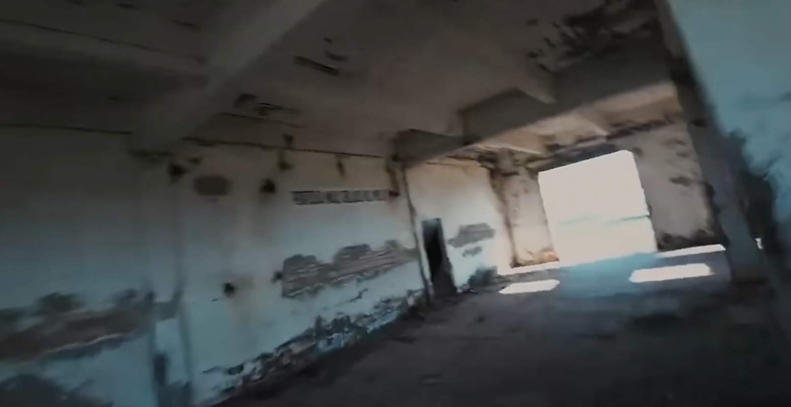
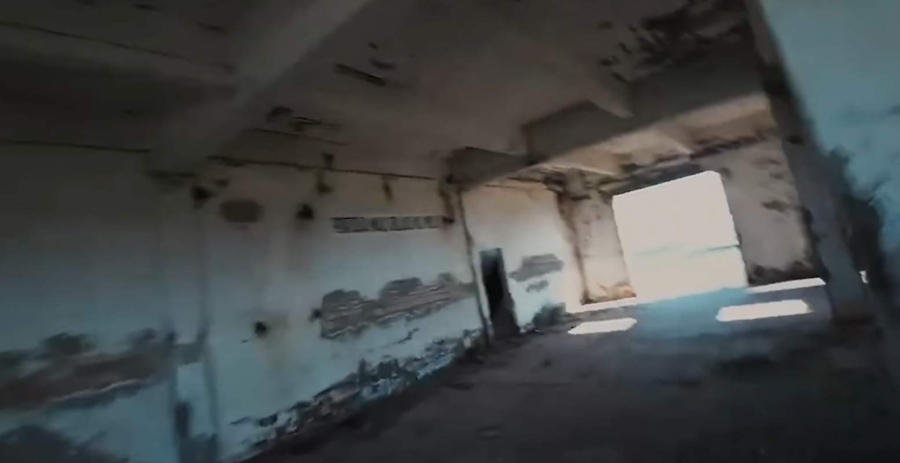
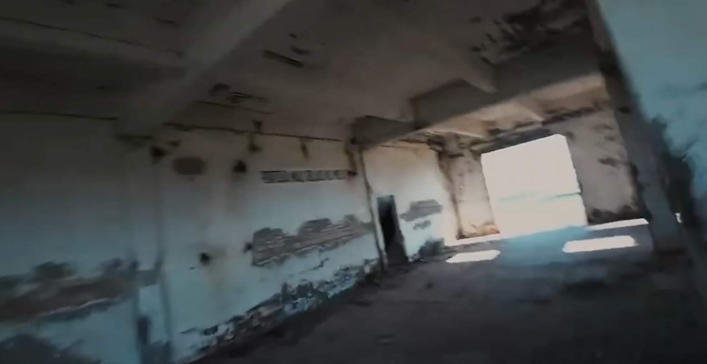

Figure: A reconstruction of a room of the abandoned coal mine shown in the figure along with drone orientations.
4/12/2025

Figure: A reconstruction of a room of the abandoned coal mine shown in the figure along with drone orientations.
The internet hosts an enormous volume of drone footage and other navigation-related videos, capturing everything from scenic landscapes to complex aerial maneuvers. However, despite this abundance of visual data, these videos typically lack essential spatial information—such as odometry, GPS, or IMU data—which makes it difficult to reconstruct 3D environments or perform Simultaneous Localization and Mapping (SLAM).
Unlocking the spatial structure of these videos would enable a wide range of powerful applications. For instance, environments could be annotated at scale, providing rich semantic and geometric datasets that could support everything from environmental monitoring to machine learning and robotics.
More specifically, drone trick footage—if annotated with spatial context—could be used to train autonomous agents to perform similar maneuvers, benefiting fields like aerial cinematography, entertainment, and robotics. The challenge, however, lies in the fact that most public video content lacks the metadata required for traditional SLAM pipelines.
This project explores a novel solution: using deep learning to infer spatial information directly from video, offering a new way to leverage raw visual content for 3D scene reconstruction.
The Visual Geometry Grounded Transformer (VGGT) is a feed-forward neural network designed to infer key 3D attributes of a scene from one or more images. These include camera intrinsics and extrinsics, depth maps, point maps, and 3D point tracks. Unlike traditional SLAM methods that rely on iterative optimization (like Bundle Adjustment), VGGT estimates all these components in a single forward pass.
A key capability of VGGT—particularly relevant for SLAM—is its ability to simultaneously predict camera poses and reconstruct the surrounding environment, eliminating the need for odometry or additional sensor input. This efficiency allows VGGT to operate at high speed while maintaining strong geometric consistency across frames.
This project uses a pre-trained VGGT model to perform real-time 3D reconstruction from raw video frames. The pipeline consists of the following stages:
By combining deep learning with spatial inference, this method offers a practical and efficient alternative to traditional SLAM pipelines—particularly when working with video data that lacks sensor metadata. It demonstrates how modern vision models like VGGT can be used to extract structured spatial understanding from unstructured visual content, opening up exciting possibilities in autonomous systems, robotics, and immersive media.

Figure: Failure case of method. Predictions overlap, causing buildup of stray geometry. Need to realign camera views with feature mapping.